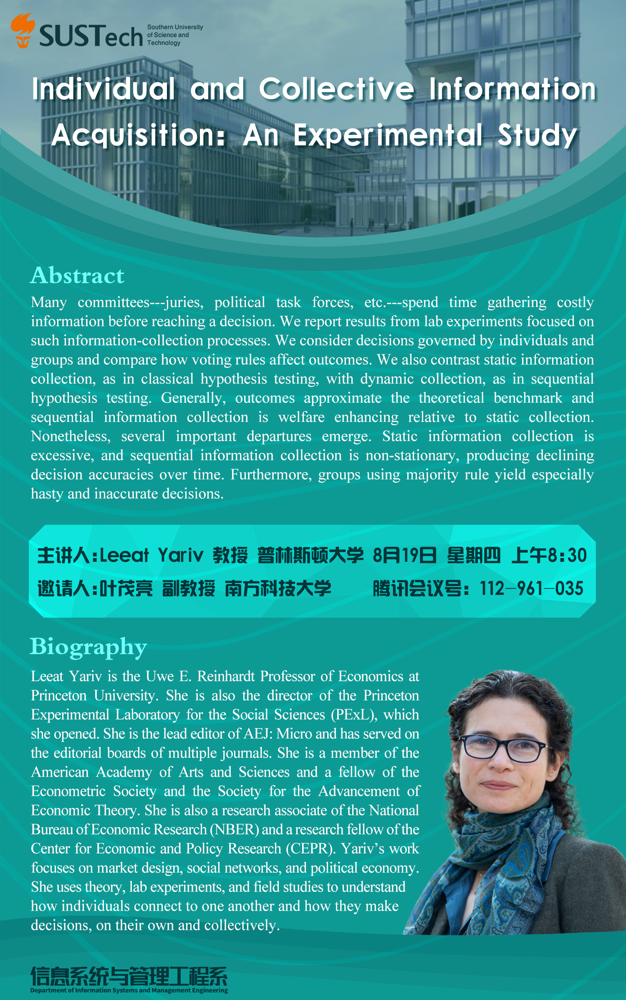

应叶茂亮副教授的邀请，普林斯顿大学Leeat Yariv教授于8月19日上午为信管系、商学院和南科大师生在腾讯会议上带来题为Individual and Collective Information Acquisition: An Experimental Study的学术讲座。Leeat Yariv教授是美国人文与科学院院士，Econometric Society的会士（为经济学界最高学术成员荣誉），Society for the Advancement of Economic Theory (SAET)的会士（理论经济学领域的最高学术成员荣誉），经济学顶级期刊AEJ: Micro的总编辑。
讲座围绕决策过程中的信息获取，在相关理论背景上展开了实验研究。实验为3X2设计：个人决策 vs. 多数人决策 vs. 一致同意决策；静态信息收集 vs. 动态（序贯）信息收集。
信管系和商学院部分师生、国内外各大高校相关领域的华人学界同行共约100人在线参与。值得注意的是，除了南科大师生参与之外，国内其他主要高校的老师也积极参与讲座并与Leeat Yariv教授热烈讨论，包括叶茂亮副教授的合作者清华大学郑捷副教授、厦门大学耿森、包郑扬、北京师范大学何浩然、南京审计大学张军老师（国自科优青项目负责人、Leeat Yariv教授的学生）等。该讲座进一步促进商学院和国内同行及国际著名学者的交流，提升南科大商学院在国内外经管学界的知名度。
近期叶茂亮副教授还将邀请应用微观经济学领域的国际知名学者Gerard Padr´oi Miquel和Paola Giuliano教授给南科大师生带来在线精彩讲座，内容覆盖发展经济学、文化经济学、社会经济学与政治经济学等。
